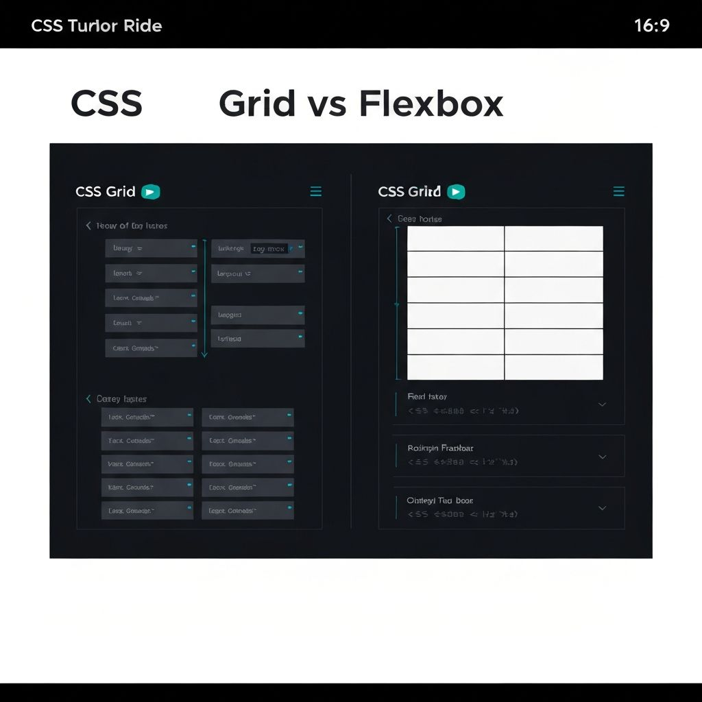

Bilibili
亦凡的设计日常
@yifan-builds · 8.2k 关注
8.2k关注
42视频
180k总播放
中英文双语的技术与设计向视频。我记录真实项目的完整过程 —— 从构思到上线。没有标题党、没有水分，只有诚实的开发日志和偶尔的设计深度解析。
最新视频
用纯 HTML 搭一个个人网站 —— 完全不需要框架

CSS Grid 与 Flexbox：什么时候用哪个
黑客松 Vlog：48 小时、0 睡眠、1 款应用